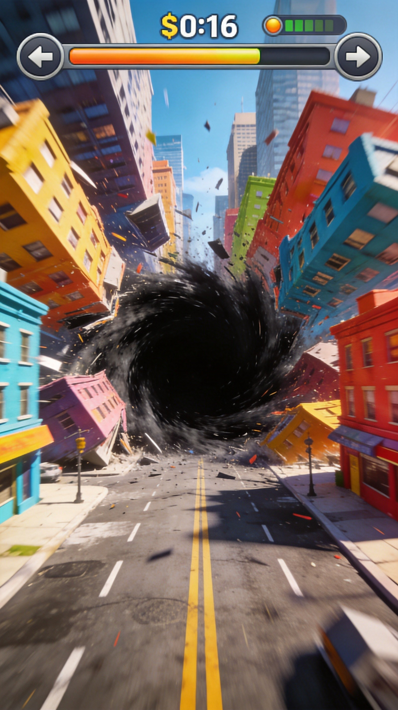

The Hard Truth About Your Hole.io Runs
You keep dying in the first thirty seconds. You spawn, panic, and get swallowed by a hole twice your size because you have no spatial awareness. I have over two thousand hours in Hole.io. I have dominated every map. I know exactly why you lose. You treat this game like a mindless eating simulator instead of a tactical battle for map control. You ignore the size thresholds, you misjudge your opponents, and you waste your two-minute rounds chasing useless scraps. Stop crying about lag. Your positioning is garbage. Read every single mistake below. Fix your brain, or stay at the bottom of the leaderboard.

| # | Mistake | Quick Fix |
|---|---|---|
| 1 | You Ram Bigger Holes | Stop playing chicken |
| 2 | You Chase Tiny Trash Early On | Scan the map immediately upon spawning |
| 3 | You Camp the Map Center | Treat the center like a hazard zone |
| 4 | You Overextend for a Single Car | Calculate your escape routes before you commit to an object |
| 5 | You Ignore the Final Timer | When the timer hits thirty seconds, you must switch to hyper-aggression |
You Ram Bigger Holes
You see another black hole and immediately steer toward it, assuming you can eat them. You completely ignore the visual size difference between your singularity and theirs. You just mash the joystick and drive your tiny hole straight into the path of a massive, map-dominating opponent. You think aggression equals success, so you blindly charge the biggest player on the screen without calculating if your radius actually exceeds theirs. You treat every encounter like a fight you can win.
Hole.io has strict size thresholds. If your black hole is even a fraction of an inch smaller than your opponent, you do not eat them. They eat you. When you ram a bigger hole, you instantly forfeit your entire run. All the cars, trees, and pedestrians you spent the first minute consuming vanish down their throat. You hand them a massive score boost while resetting your own progress to zero. It is the fastest way to throw a round.
Stop playing chicken. Before you engage any opponent, visually compare your outer edges to theirs. If they look even slightly larger, run away. Use your early game to eat isolated objects on the periphery of the map. Only engage a smaller hole when you are absolutely certain your radius engulfs theirs. Corner them against a wall or a building where their escape routes are limited. Patience wins rounds; blind aggression just feeds your enemies.
You Chase Tiny Trash Early On
In the first thirty seconds, you obsessively hunt down individual pedestrians and tiny street signs. You weave through narrow alleys just to swallow a single park bench. You completely ignore the larger clusters of medium-sized objects sitting in the open streets. You treat every single pixel of the map like it holds equal value, wasting precious seconds navigating tight corners for minimal size progression. You prioritize sheer quantity over actual mass, starving your growth when you need to expand fast.
Early game growth dictates your mid-game survival. If you spend the first minute eating trash, you remain small while your opponents consume cars and construction barriers. When you finally look up, everyone else is massive. You cannot eat their objects, and worse, they can now eat you. You locked yourself out of the high-tier map items because you were too busy playing Pac-Man with pedestrians. You fall irreversibly behind in the size race.
Scan the map immediately upon spawning. Identify the largest objects you can currently swallow and path directly to them. Ignore the tiny clutter. Drive straight to the streets lined with cars and the parks filled with large trees. Eat the biggest thing available to you at every single moment. This rapidly increases your radius, unlocking the medium-tier objects much faster. Speed up your growth curve by ignoring the small fry entirely.

You Camp the Map Center
As soon as you reach a medium size, you drag your hole directly to the dead center of the map. You think the middle has the best loot, so you park yourself there and wait for objects to respawn or for smaller holes to wander by. You sit in the most exposed, highly trafficked area of the entire city. You stop moving, stop hunting, and just camp the middle, expecting the game to hand you the win.
The center is a death trap. Every aggressive player heads to the middle to hunt. By camping there, you make yourself an easy target for anyone slightly larger than you. You have no escape routes because bigger holes can approach from all four directions. Furthermore, the center is usually stripped clean by the time you arrive. You waste your time in a barren zone while the real loot sits untouched on the edges.
Treat the center like a hazard zone. Stick to the mid-ring areas of the map where the object density is still high but player traffic is lower. Keep your hole in constant motion. If you clear out a street, immediately rotate to the next district. Only enter the dead center when you are the absolute largest hole on the map and you are actively hunting the remaining survivors to eliminate them.
You Overextend for a Single Car
You spot a nice, juicy sedan parked near the very edge of your swallowing radius. You stretch your hole over it, pushing your position deeper into dangerous territory just to secure that one extra piece of mass. You completely ignore the fact that a much larger hole is rotating toward your exposed flank. You risk your entire existence and your accumulated score just to consume a single, mediocre vehicle.
Hole.io is about spatial awareness, not greed. When you overextend to the edge of your radius, your center of mass shifts forward. If a bigger hole approaches from the side or behind, you cannot pivot fast enough to escape. You get caught half-in, half-out of a building, or trapped against a wall. You lose everything you built in the last sixty seconds just because you lacked the discipline to leave a car behind.
Calculate your escape routes before you commit to an object. Never stretch your radius to grab something if it puts you in a corner or blocks your path to the open map. If a car is near a building and an enemy is nearby, leave the car. Your survival is always more important than a minor size increase. Stay in the open, keep your options clear, and only eat when you are safe.
You Ignore the Final Timer
The two-minute clock is ticking down to the last twenty seconds. You are comfortably sitting in second place. Instead of making an aggressive play to secure first, you just hide behind a skyscraper. You play completely passively, hoping the first-place player makes a mistake. You stop eating entirely and just watch the timer drain, assuming your current size is enough to hold your position without trying anymore.
Passive play in the final seconds guarantees you lose to a competent player. The person in first place is not going to stop eating. They will continue to consume buildings and grow. If you stop eating, the size gap closes, and they will eventually overtake you or eat you. Hole.io rewards continuous expansion. Hiding does not protect your score; it just ensures your score stagnates while your opponent's skyrockets.
When the timer hits thirty seconds, you must switch to hyper-aggression. Stop hiding. Identify the largest remaining objects on the map and consume them rapidly. If you are in first place, eat everything to widen the gap. If you are in second, hunt down the first-place player and eat them, or eat the objects they are ignoring. Never stop moving. The game ends when the clock hits zero, not a second before.

The Bottom Line
Hole.io is not a game of luck; it is a ruthless math equation. The players who win understand exactly what they can eat, where the high-value objects spawn, and when to run away. You lose because you let your ego drive your joystick. Stop chasing tiny trash, stop camping the center, and stop ramming bigger holes. Master the size thresholds, control your spatial positioning, and eat with purpose. Do that, and you will stop being food for other players. Now get in the arena and prove you actually learned something.